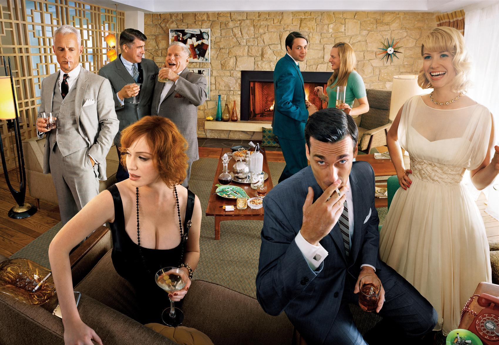
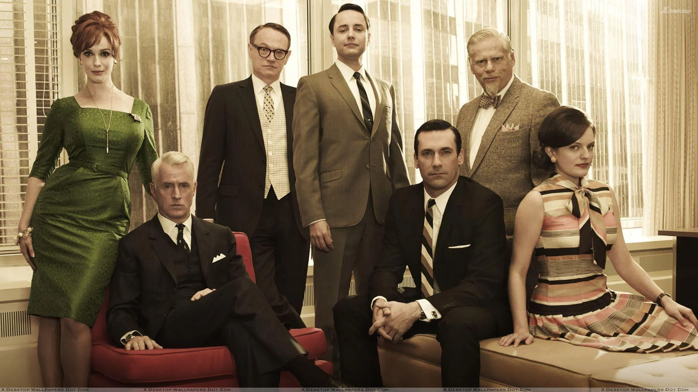
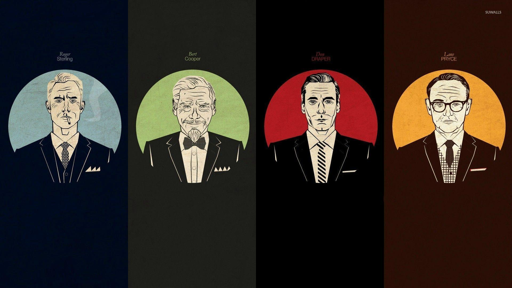
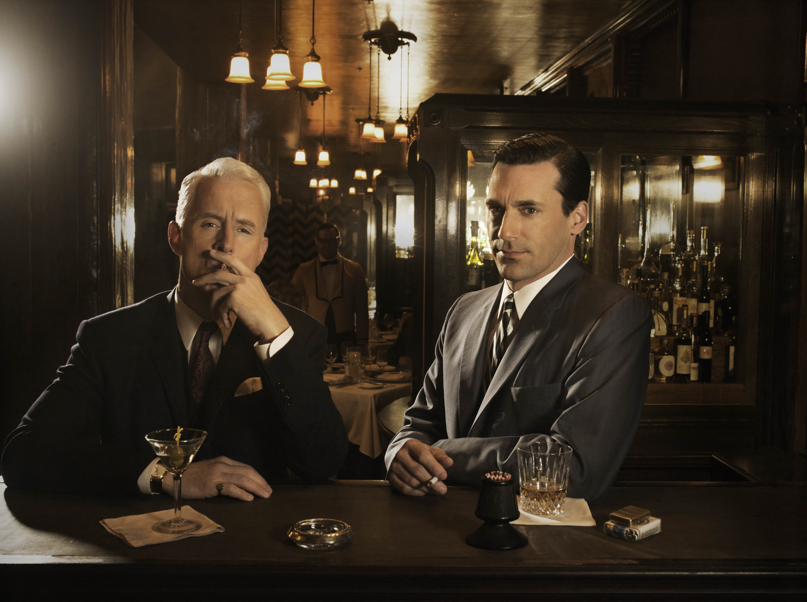
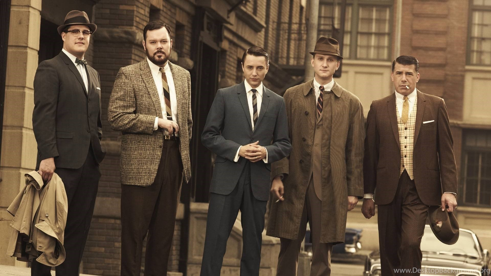
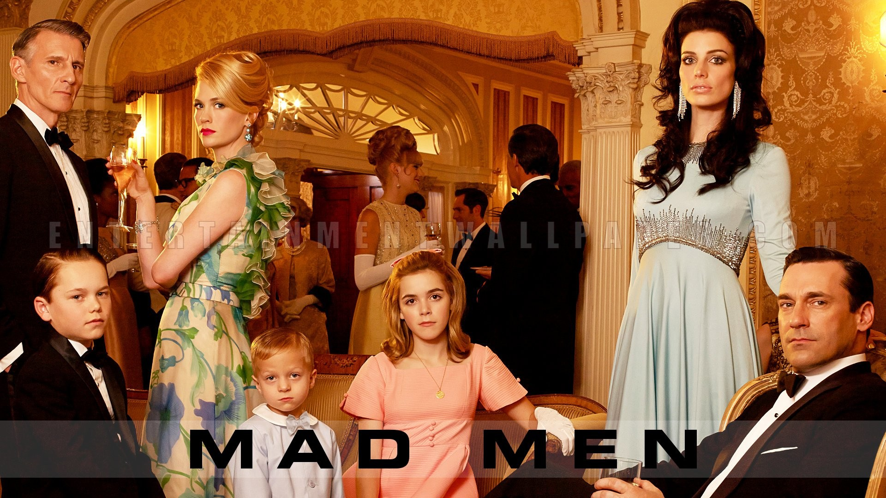

Imágenes de la serie
Galería
Una selección de las mejores imágenes oficiales para que puedas usar de fondo de pantalla en tu computadora.








Imágenes de la serie
Una selección de las mejores imágenes oficiales para que puedas usar de fondo de pantalla en tu computadora.





